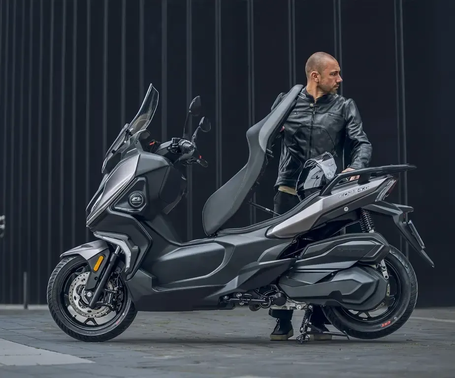
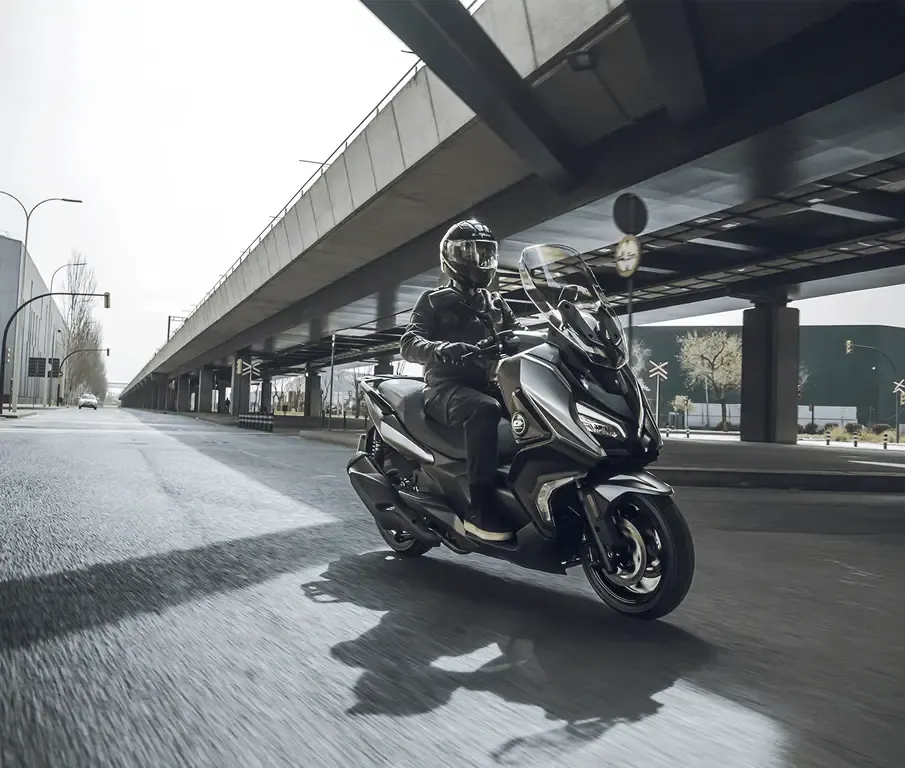
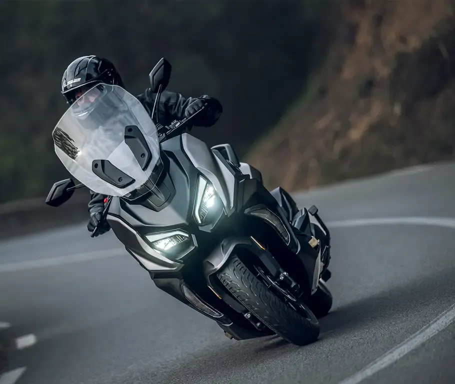
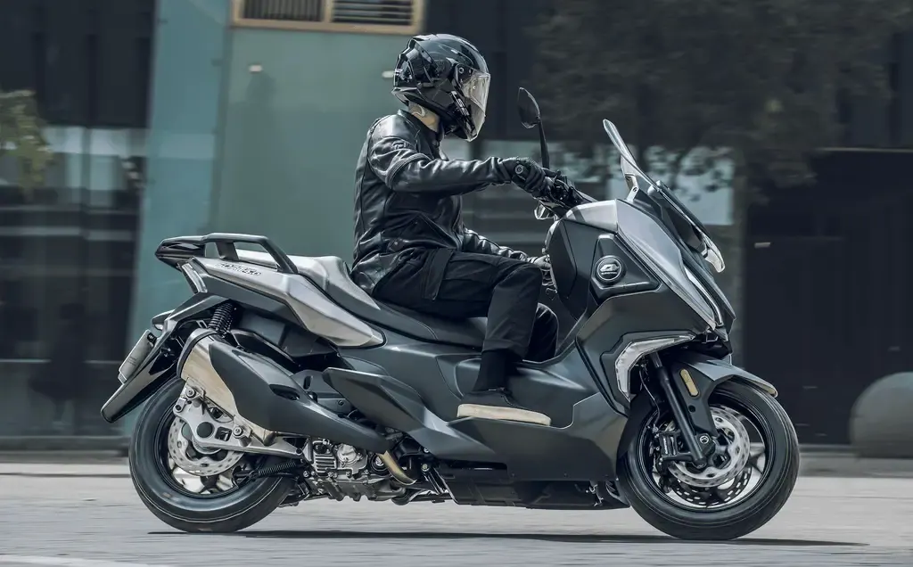

QJ Motor
SQ 16
B·A1 125 cc · Scooter
Propuesta de OpsPilot para Expomoto Córdoba, en revisión. No es la web oficial: expomotocordoba.es




Motor monocilíndrico 4 válvulas. Potencia 15 CV. Refrigeración líquida. Sistema de frenado ABS. Dashboard TFT mirroring. Iluminación Full LED. Sistema Start & Stop. Baúl de serie (top case). Espacio bajo el asiento para casco. Caballete lateral y central. Disponible en color gris mate, negro y blanco. Carnet A1-B.
que genera 15 CV de potencia. Complementada por un sistema microhíbrido que actúa como motor auxiliar durante las arrancadas mejorando la sensación de potencia percibida por el conductor.
pantalla de 5» full color e interfaz día/noche con conectividad mirroring para el móvil.
seguridad, comodidad y facilidad de manejo con mandos retroiluminados.